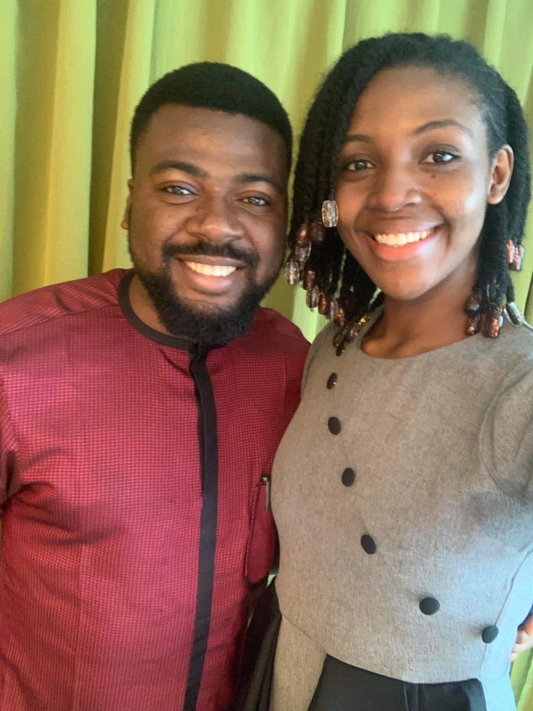
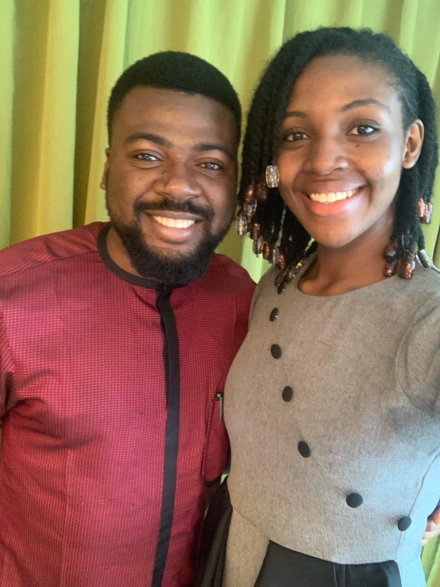

$1000 (N800,000) to
write a description of a product:
$625 (N500,000) from writing
a simple post on Nairaland
$2500 (N2,000,000) from selling her
digital products through writing:

N427,000 from simple writings
on Whatsapp selling two products

Maybe you're asking yourself........ Can writing words on my phone actually make me a thousand dollar monthly? Can it be that easy? Yes, it can be that easy. Most of what you will be doing is checking out posts on Google and Facebook, And writing on your smartphone using the information you've seen. But if you are like 98% of people on the internet... You may be thinking of how you can make some quick money from a normal writing on Facebook. And maybe even now, you're begging me in your thoughts to "show you the way" so you too can show off your money like the Yahoo boys. Well, if you're like that.... Let me tell you something... I can't help you if you still have that make-quick-money thought in your brain. So here's what you should do. Get that thought out of your head first, then and only then can I help you. And I want to let you see that you can do the same as the people above.... If you're willing to follow me as I write.
What kind of writing is this?
It is called copywriting. Copywriting is a skill used to write words that gives people the information they need to make a decision on: A specific product or service, An opportunity that would benefit them, Or how they can achieve a goal faster. If you want me to break it down for you, then think of a school brochure. It is normally called a school calender or something similar. You know that from that brochure, you get all the information you need to know about that school, right? The reason why your parents took you to a particular school in your environment might be because of how great the school looked in the brochure. It is the same with copywriting. Copywriting mean that you write in a way that informs people, but also makes them take a certain decision or action. Actions like:
- Registering their child in a school (like the example I gave earlier),
- Buying a product,
- Join a Whatsapp class or webinar,
- Get a scholarship,
- Donate to a cause (like a charity or church event),
- To gather people for a protest or event (like the EndSARS protest),
- To increase the desire of the people for something (brands like Indomie do this),
- And many more.
Copywriting is simply words written down to inform, to engage and persuade. It is used by famous brands such as Indomie, Nestle, Gucci, Pepsico, Kelloggs. Just name any famous brand you know. Also politicians, Bet9ja, companies like Dangote and many others. And yes it can be used to get thousands of buyers, to get hired online or get more followers on Instagram.
So what can copywriting do for me?
With copywriting, you can work at your 9-5 jobs, and still write copy that could make you more than $1500 monthly. With copywriting, you can increase the sales of any other skills you have. Just like I do most of the time, Even if I travel I still make money by using copywriting in my twelve sources of income. With copywriting you can atrract people to buy from your shops... Even if there are 3 other similar shops around them. With copywriting, you can learn how marketing works, Set up your sales funnels (this is a basically the complete process of how you turn a stranger into a high-paying customer), You automate them and then watch the money flow in. Most business in Nigeria suffer because they are expecting God to send them customers from the sky. Most times they don't even know how to advertise their products and services well enough. But with copywriting, you will learn how to advertise your businesses well and get more customers. With copywriting you can make enough money to take care of your expenses and have extra to keep. You'll be able to drink that sweet and cold orange juice, With hot and peppered grilled meat whenever you want to.
See What Others Think Of Copywriting...
But In Case You're Wondering...
What if I'm not that good at writing? What if I don't know how to write and use it to make money? As they say, "Rome wasn't built in a day". You can only build a place like Rome if you'll just start building. If you don't start with the 1st block, you won't get anywhere. We've all had to learn from the beginning. Including me. So if you don’t have any experience you can point to, Or you’ve never made money by writing before... There’s nothing to fear, As you begin your journey into copywriting, you’ll see how simple it is... You will continue using your everyday language while writing. You won't need an A+ in English to write copywriting and make sales for your client. You won't need any degree or certificate, Or any school-stuff, for you to be successful in copywriting. Even if you have been labeled as a 'dummy' or a 'failure' in class, You can still make it with copywriting. Robert Kiyosaki (a multi-billionaire real estate investor)was not what our teachers would call 'intelligent' in terms of school education. He even said in his book 'Rich Dad, Poor Dad', he wasn't a 'whiz' kid. Yet he is a successful and wealthy man partly due to copywriting.
Can I Start With Only My Smartphone?
You will have an advantage if you already have a laptop. But it is also okay if you don’t have a laptop... As long as you have a working smartphone, Then you're good to go. You get it, right? Okay, let's move on. But here's something you should know.. Copywriting is not about hyping and lying to get people to buy your product/service. If you do that, you won't last for long before you sink. Although copywriting will help you create strategies for your business, Increase your sales and make as much as a $1000 every month, However... It is not a "get-rich-quick" system. You won't get this "thousands of dollars" that I'm speaking of without working. It is not going to be as easy as betting N800 on a football game in Bet9ja to win N38million. In this kind of skill, you hardly become an overnight success... nor do you land some big jobs immediately you've learnt it. So if you're not willing to think about the results that happen in the long term... Do something for me, Stop reading this. And continue whatever you were doing before you got here. Because no matter how much money or sales you could make through copywriting, If you’re not serious and consistent, you might never make the kind of money others are making. Still with me? Good! When you've learnt copywriting and eventually start writing copy, you become what we call a "Copywriter".
What does a copywriter do?
A copywriter is a person that is skilled at writing copy (which is just a fancy word for a writing that uses copywriting). A copywriter writes stuff like:
- The scripts used to create video adverts,
- The content on websites, landing pages,
- Most of the posts celebrities make on their social media pages that they use to engage their followers,
- Facebook and Instagram sponsored posts,
- Newspaper advertisements and adverts placed on billboards,
- The name a business will use as well as the slogans,
- Descriptions of a product like the ones you see on Jumia and Amazon,
- The content in brochures
When you know and understand the emotions of humans, How they think and what makes them to act, you can write copy.
But how much exactly will I earn from this copywriting...
It depends on what part of copywriting you're focusing on. You could choose to write:
- Sales letters : Which you can charge anything between $1,000 - $5,000 per letter
- Landing pages: Which you can charge anything between $3,500 - $8,000 per landing page
- Email Newsletters : Which you can charge anything between $1,000 - $4,500 per email
- Webinars and the video scripts used in adverts you watch on TV and apps Which you can charge anything between $2,000 - $7,500 per script.
- Website's HOME & ABOUT content: Which you can charge anything between $2,500 - $15,000 per website.
- Facebook & Instagram Sponsored Posts: Which you can charge anything between $1,000 - $4,500 per ad copy.
How long will it take before I start making money with copywriting?
It depends. The period could be as short as 2-4months. But if you don't have the determination or the right circumstance around you (e.g electricity to charge phone, food to eat).... Then the time period will increase even more. And if during those four months you make no action to get better or learn more stuff in copywriting.... You won't get those results the other copywriting experts get. Copywriting isn't a one time subject that can be finished in one course or class. So the learning always continues.
Now what results have qualified me to speak on copywriting?
Let's start with a proper introduction.
 My name is Emmanuel Akpe and I am popularly known as the prince of copywriting and chief value officer.
I am a copywriter, business magnate, sales and marketing consultant, trainer, author and speaker.
My book Money 101 has been downloaded and read by more than 20,000 persons.
I am also the author of Why You Are Broke, Whatsappp Income Mastery and numerous digital products and reports.
I am also an addicted lover of God and the convener of Rich Firebrands.
My digital trainings has affected more than 20,000+ lives directly and millions indirectly.
And also mentored 500+ persons into becoming millionaires.
I am one of the mentees of Elisha Mamman and have worked with him previously.
My name is Emmanuel Akpe and I am popularly known as the prince of copywriting and chief value officer.
I am a copywriter, business magnate, sales and marketing consultant, trainer, author and speaker.
My book Money 101 has been downloaded and read by more than 20,000 persons.
I am also the author of Why You Are Broke, Whatsappp Income Mastery and numerous digital products and reports.
I am also an addicted lover of God and the convener of Rich Firebrands.
My digital trainings has affected more than 20,000+ lives directly and millions indirectly.
And also mentored 500+ persons into becoming millionaires.
I am one of the mentees of Elisha Mamman and have worked with him previously.

 I have been interviewed by FNISBC on their YouTube Channel.
I have spoken on copywriting with Franklin Emmanuel on his YouTube channel.
And also been interviewed by Redemption F.M,
Followed Emeka Nobis on his Ghana tour.
Was an honoured guest at the Profitable Business Masterclass, placed with Kingsley Ime and Oyo Effiom.
Also invited to Kaizen Hangout.
Also at the NEXT VOICES CONFERENCE with Steve Harris, John Obidi, TriciaBiz, Fela Durotoye, Chinaza Favour and many others.

And through the BOC College, I have raised up many great copywriters such as Chianu Solomon (The Marketing Oxide),
Jacob Okoro, Esther Odeminigwe (Smilepreneur),
Isaiah Ibigbemi (He's great at Upwork), Godsplan K. Ugwuja(Pendullum),
Muftaudeen Azeez (Paypal Expert), Praise Kalu,
Awesomeness Esubuana, Oreoluwa Afolabi and many others.
I have been interviewed by FNISBC on their YouTube Channel.
I have spoken on copywriting with Franklin Emmanuel on his YouTube channel.
And also been interviewed by Redemption F.M,
Followed Emeka Nobis on his Ghana tour.
Was an honoured guest at the Profitable Business Masterclass, placed with Kingsley Ime and Oyo Effiom.
Also invited to Kaizen Hangout.
Also at the NEXT VOICES CONFERENCE with Steve Harris, John Obidi, TriciaBiz, Fela Durotoye, Chinaza Favour and many others.

And through the BOC College, I have raised up many great copywriters such as Chianu Solomon (The Marketing Oxide),
Jacob Okoro, Esther Odeminigwe (Smilepreneur),
Isaiah Ibigbemi (He's great at Upwork), Godsplan K. Ugwuja(Pendullum),
Muftaudeen Azeez (Paypal Expert), Praise Kalu,
Awesomeness Esubuana, Oreoluwa Afolabi and many others.
 Here are some of what my past students have to say:
Here are some of what my past students have to say:


How Did This Change Occur??
The story begins at the University Of Uyo, Akwa-Ibom State, Nigeria. I studied microbiology for 4 years. Graduated with a 2'1 Spent over a million naira in the course of my four years in school fees, feeding expenses, accommodation, school materials, transport fares.. What did I get in return?... Nothing! Absolutely nothing. The only money I've made from Microbiology is the one ITF paid me for doing industrial training. Even that one was just N15,000. One day, I decided to try my luck on betting to see if I would win at least some money to be able to take care of myself. Unfortunately I ended up becoming addicted to betting... I realized I couldn't stop myself any longer, any money I got was spent on betting and as usual I lost the money. I continued living like that because I was a slave to addiction. You may be wondering how this concerns copywriting... This is just to show you how betting fails us in the long term. It was until I gave my life to Christ before I could break that chain of addiction. I changed my ways and got a job as a private teacher earning 95,000naira ($119 approx) per month. In 2016, I learnt about copywriting by which one could generate more than 2,000 potential clients, And make a $1,000 in less than a month. Get those clients that will thank you for working with them, and pay you the big amounts you deserve without complaints. I focused my energy on learning copywriting and... Everything that I needed to use the skill profitably and I started to make use of it. Now, I have made over 100 million naira ($125,000) and trained more than 500 people in becoming millionaires with copywriting. I also set up an automation system so that even if I stop working today, I will still be receiving credit alerts daily.
How do I learn copywriting?
If you want the easiest way of learning copywriting, Go to YouTube and do your search on How To Become A Copywriter. Join Facebook copywriting groups and see what others have to say. Subscribe to YouTube channels like Dan Lok, Sabri Suby and Alex Cattoni. However there are many fake copywriting teachers and coaches out there with only theories to deliver. They who haven't practised and made money with their skills. I could help you begin your journey into copywriting if you wish.
Here's how I can help you...
I have a beginner 30-days college where I gathered five experts on subjects like:
- How to use simple posts to market your business
- How to sell your digital skills on Upwork and Fiverr to earn in dollars
- How to turn your knowledge into products that make you money
- How to write copy to advertise your business
This college is called the Bachelor Of Copywriting College (BOC).
I made it to help those who can't afford the expensive copywriting courses out there.
It will also help you get to a level where you can then get enough information to learn more about copywriting.
Let's just be honest enough to say..
Many of the a-z copywriting courses and classes made by other Copywriting Experts can hardly be afforded by the majority.
How many out of the many workers in Nigeria or Africa in general can afford to pay $50 for a copywriting course with how the dollar has been rising like water waves?
Think about the many expenses we all have to pay.
We have to buy food and to worsen the case,
a bag of rice is now N30,000 ($38 approx).
We have to pay electricity bills despite how the light is so unreliable.
We also have to take our children to school and pay transport fare.
It's almost impossible to mention all the expenses one has to pay.
Or what about the rents of the house we live in?
How can one manage to buy a course of about N50,000 ($63 approx) when we are still trying to provide food for our families?
It is very easy to say that one can borrow..
But no one talks about how we are supposed to pay the debt when there's no more money to implement the course bought?
Which is why I decided to make a difference.
I'll choose to make my classes affordable to the majority regardless of what others say.
The Bachelor Of Copywriting College is like a mini-version of big courses like the 72IG of Expertnaire.
It is way more easier to get better in copywriting when you have learnt a little,
Then when you have learnt nothing at all.
In skills like this...
The earlier you start, the better.
Cause experience plays a lot with copywriting.
What would it do for you to know how to convince people to buy from you?
Or is it nice to have low sales?
Do you want a change?
Do you want to keep posting pictures of your products on your status and then no one buys?
I haven't had a day without credit alerts from sales of my digital products - for four years starting right from January 1st 2019 so I don't know how it feels.
Just imagine what impressive results you could gain like this one..
 But if you'd like a change, then continue reading,
But if you'd like a change, then continue reading,
I personally invite you to join, the Bachelor Of Copywriting College:
Where rather than we catching the fishes for you, we teach you how to catch fish like we do.

Where you learn:
Boxfull Of Copywriting Ingredients
Freelancing Toolkit
The most money-making freelancing sites you can start with are Upwork, Fiverr and Freelancer. And I'm going to show you how to make money on those sites.Lead Generation Box
On-The-Job Toolkit
And there's more..
When you join us there at the college, you get FREE amazing bonuses and resources like:
Bonus 1:
Bonus 2:
Bonus 3:
Bonus 4:
Bonus 5:
Bonus 6:
Bonus 7:
Total Value: N1,250,000
What's My Guarantee?
I and my team have been running BOC (Bachelor Of Copywriting College)for twenty-nine editions now.
And over 18,600 people from different countries have joined the college.
It's been 5 years now and to be frank...
If I fail to fulfil my promises....
My reputation would be destroyed in the eyes of my mentor Elisha Mamman and over 18,600 people.
Who would want to do that to themselves?
Certainly a wise person would not do that.
Plus I want to keep the title 'Prince Of Copywriting' as a true title and not one that has been overhyped by gullible men.
So obviously it won't be in my or your best interest if I don't deliver on all the promises mentioned above.
If after you join this college, you realize that this is just some overhyped class that has added nothing valuable to your life,
Then do message me personally and I will return your money back fully.
If I don't return your money, I give you permission to screenshot your message to me..
Disgrace me on Facebook and WhatsApp to show the world what a fraud I am and save others from falling in the same trap.
But come to think of it...
If I were a fraud, why do you think they said this?
Or why do you think the famous Olorunfemi Prosperity joined the 15th edition of BOC?
 Or how come these happened in the past BOC editions?
He made N502,000 ($628 approx) from one voice note on copywriting he had heard from the BOC College
He made over N30,000,000 from selling real estate after the class
A newbie never made less than N500,000 ($625) monthly after BOC
Or how come these happened in the past BOC editions?
He made N502,000 ($628 approx) from one voice note on copywriting he had heard from the BOC College
He made over N30,000,000 from selling real estate after the class
A newbie never made less than N500,000 ($625) monthly after BOC
 The copy given as an example in one of the sessions at BOC was so good that she almost re-bought the product.
The copy given as an example in one of the sessions at BOC was so good that she almost re-bought the product.
 She confessed that she became a Richpreneur after the class
She confessed that she became a Richpreneur after the class
Let's just face the facts
All these couldn't have happened if I were a fraud or if BOC was a class with absolutely no value. Even if you can't believe my words... You can know through the works that BOC has done in its students if BOC is indeed a college of copywriting that can teach you how to make sales like crazy.
YES I'M INSo what will I be investing to gain access to this college?
Certainly a college filled with value worth over a million naira can't be free. You are right, it's not free. And yes I don't feel a bit guilty over this.
Here's why...
It took years of hardship and learning to get to where I am today. I endured a lot of insults, disgrace... Spent a lot of money and time of my life and literally passed through fire to get here... And if access to this college were free, then it would get devalued by men who don't know the great value of it. Which will just be a waste of my sacrifice. The price tag is just a means of draining out the undesirable men... They who think that they should get everything for free regardless of what it took for the owner to get it. But because I know the great burden that lies on humans already: The expenses for food, electricity, the ever-increasing rents, school fees, clothing and many others... I made the price to access this college extremely affordable... So much that I can boldly say that you'll hardly find any reputable and famous copywriter who'll write copy for such a low price. The price can't even be compared to what you'll use to buy 2plates of jollof rice with chicken at Sheraton. It's even more affordable than what a lady will pay her hairdresser to plait a thousand braids. Think of it as your first investment to making your first million naira. Think of the thousands of naira you have spent on transporting yourself to different locations last year, Did you make more money from it? Hardly do you make your money back from the trip, right? Yet man must pay for their expenses. The best you can do is to grow your income so it becomes more than your expenses. That is what this college will set you up for. This is more like me taking a loss, considering what it took me to get it. But I'll do it for my fellow men who are already trying their best to learn about digital skills. I would still be justified if access to this college were at least 40,000naira ($50). Which is just 3.2% of the worth of the bonuses. But don't worry, it's not upto that. It is a lifetime fee of 5,000naira ($6.25). You will pay just once and you will have eternal access to all we will teach in the class.
But...
But if you read to the end of this page, you'll get in there for a discount price of 4,000naira ($5). If you are a lady, then this is the lowest you'll pay a makeup artist for a simple makeup. And yet your makeup cannot help you to make sales or can it? Will it increase your bank account figure? No it won't. The 30th edition began in February. So click the button below to join us now. YES I'M IN After you click the button, you'll be redirected to where you can make payment. Thereafter, you'll be added to the group until the classes begins.
Again, here's what you'll get in this college
Boxfull Of Copywriting Ingredients
Freelancing Toolkit
The most money-making freelancing sites you can start with are Upwork, Fiverr and Freelancer. And I'm going to show you how to make money on those sites.Lead Generation Box
On-The-Job Toolkit
And there's more..
When you join us there at the college, you get FREE amazing bonuses and resources like:
Bonus 1:
Bonus 2:
Bonus 3:
Bonus 4:
Bonus 5:
Bonus 6:
Bonus 7:
Total Value: N1,250,000
Which is better?
That you continue having low sales and to make matters worse... Having no skill/side hustle to earn money. OR You get a skill that helps you sell products/services and start making your share of the dollars. The 30th edition of BOC will begin in February. Click the button below to join us now. YES, I'M IN
PS: Woow, you finished reading such a long landing page. You are an awesome reader with great potential. If you could just learn copywriting at BOC, you'll be able to fine-tune that skill. It's because of you that I am going to reveal my secret. If you make use of the coupon code "Prof" when you want to make your payment, you'll immediately get a 20% reduction in your payment. That way you'll only have to invest N4000 to join the class. Once again, click the button below.
YES I'M IN